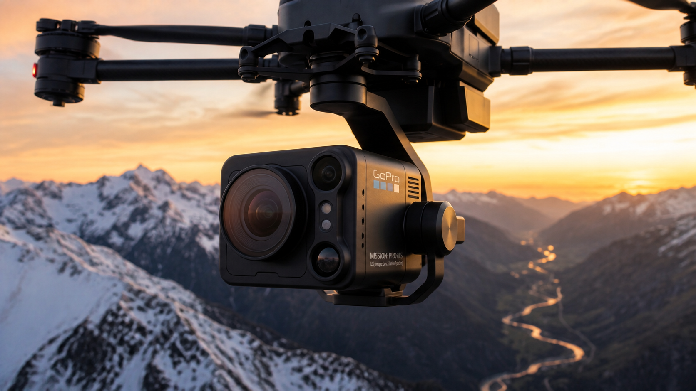

分かりやすく一言で言うと
「MISSION 1 PRO ILS」は、GoProが発表した小型のレンズ交換式シネマカメラです。本体だけの重さは197g。最大8K60の動画撮影に対応し、用途に合わせてMicro Four Thirds（MFT）レンズを交換できます。
まず知りたい5つの特徴
- 本体重量は197g
- 最大8K60、4K240で撮影できる
- MFTレンズを交換できる
- 手ぶれ補正「HyperSmooth」に対応する
- 公式の動作温度は−20℃から45℃
最初に見かけた「97g」という情報ではなく、公式仕様では197gです。レンズ、バッテリー、固定部品を付けた実際の重量はさらに増えます。
8Kで何ができるのか
通常の16:9動画では最大8K60と4K240に対応します。Open Gateではセンサーの広い範囲を使って最大8K30、4K120で記録できます。あとから横長動画や縦型ショートへ切り出しやすい撮影方法です。
10-bitカラー、GP-Log2、HLG HDR、タイムコード同期にも対応します。撮影後の色調整や、複数カメラの映像を合わせるための機能です。

レンズ交換とピント合わせ
MFTはレンズを取り替えられる仕組みの名前です。ただし、このカメラ本体にはレンズ用の電子接点がありません。GoPro公式では、手動でピントを合わせ、手動または固定絞りのレンズを使うと説明しています。
撮影者がレンズのフォーカスリングを手で回してピントを合わせます。Focus Assistは画面を最大8倍に拡大し、Focus Peakingはピントが合っている輪郭を色で示します。iPhoneまたはiPadのMISSION Monitorアプリでも大きな画面で確認できますが、アプリがレンズのリングを回すわけではありません。
ドローンではどう撮影するのか
GoPro公式ページはFPVドローンを使用例の一つとして紹介しています。ドローン自体はドローンの送信機で操縦します。
ピントは飛行前にレンズのリングを手で合わせて固定します。遠景を撮るなら、飛ぶ前に遠くへピントが合う位置と絞りを決めておきます。標準状態では飛行中にカメラが自動でピントを追い続けることはありません。
飛行中もピント位置を変えたい場合は、レンズのリングを物理的に回す外付けモーター式フォローフォーカスなど、別の機材と設計が必要です。これはカメラ本体の標準機能ではありません。
寒い場所でも使えるのか
GoPro公式仕様の動作温度は−20℃から45℃です。仕様上は雪山などの寒い場所も範囲に含まれます。
ただし、低温ではバッテリーの持続時間が短くなることがあります。寒い屋外から暖かい室内へ移動する時は結露にも注意が必要です。公式発表の「4K30で3時間超」は25℃で測定された数値で、寒冷地で同じ時間を保証するものではありません。
価格と販売状況
米国での公式価格は699.99ドル。既存GoProサブスクリプション利用者向けは599.99ドルです。MFTレンズは別売りです。
2026年8月26日からGoPro.comで予約受付中で、小売店での販売は9月予定と公式発表されています。日本国内の価格、販売店舗、発売日、保証内容は、日本向け公式発表を確認してください。
- MFTレンズは別に用意します。
- オートフォーカスではなく、基本は手動でピントを合わせます。
- 8K撮影では保存容量が大きくなります。
- 寒い場所ではバッテリー時間が短くなる可能性があります。
- 掲載画像と動画はAI生成で、公式素材や実機検証ではありません。
ろぶーの結論
MISSION 1 PRO ILSは、197gの小さな本体で8K撮影ができ、レンズも交換できるカメラです。魅力は「小さい」「高解像度」「レンズを選べる」の3点。注意点は、ピント合わせが手動で、レンズを別に用意する必要があることです。
まだ実機を試していないため、画質や使いやすさは断定しません。日本での販売情報と実機レビューが出た段階で、改めて確認したい製品です。
公式出典
情報確認日時：2026年8月27日（日本時間）